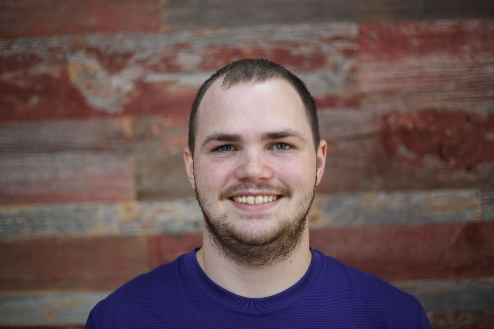
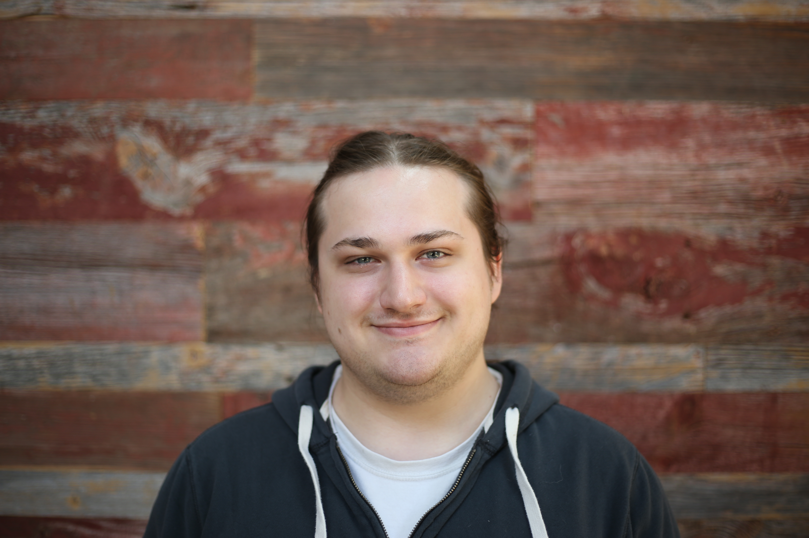

Yo scrub
Yo scrub
My name is Jacob Ervin and I am 19 years old. The only form of work I've actually had was detassling during the summer days. I came to DeltaV after hearing about during a tour with my evoke rehab. When I was first introduced to computers I've always been into learning how they work. Im hoping to get a job in codingand using my abilities to make some awesome stuff.
Hello, my name is Calvin. I am a Java developer of nine or so years. I've been interested in software and software development since early middleschool and have worked on many personal projects, from 3D rendering engines to back-end application servers. I came to DeltaV to learn more about Web Development and software development, and to hopefully acquire an awesome job working for an awesome company afterwards.
 Hello all, my name is Jacob Swenson and before DeltaV code school I was working as an electrician. After that job I was told about code school and have always wanted to do something with technology. At first I wasn't sure I was going to be able to do this but the more I worked on it the easier it got. I would find myself wanting to work on my code in my off time and was even looking forward to coming to these classes. I've always had that feeling of waking up and just not wanting to go to work and it's very refreshing waking up and looking forward to going to my classes. I'm excited to join this industry and pursue a rewarding career.
Hello all, my name is Jacob Swenson and before DeltaV code school I was working as an electrician. After that job I was told about code school and have always wanted to do something with technology. At first I wasn't sure I was going to be able to do this but the more I worked on it the easier it got. I would find myself wanting to work on my code in my off time and was even looking forward to coming to these classes. I've always had that feeling of waking up and just not wanting to go to work and it's very refreshing waking up and looking forward to going to my classes. I'm excited to join this industry and pursue a rewarding career.
 Hey, the name's Andy Fiedler. I worked with elementary age kids for the most my adult life. Though incredibly rewarding emotionally, financially it wasn't sustainable. After trying out Delta V's 101 course I decided coding was something interesting enough to compete with helping kids. It's hard to switch gears and go from being fairly good at something to being a complete noob, but it's been an enjoyable challenge. I can't wait to join this rapidly growing industry.
Hey, the name's Andy Fiedler. I worked with elementary age kids for the most my adult life. Though incredibly rewarding emotionally, financially it wasn't sustainable. After trying out Delta V's 101 course I decided coding was something interesting enough to compete with helping kids. It's hard to switch gears and go from being fairly good at something to being a complete noob, but it's been an enjoyable challenge. I can't wait to join this rapidly growing industry.